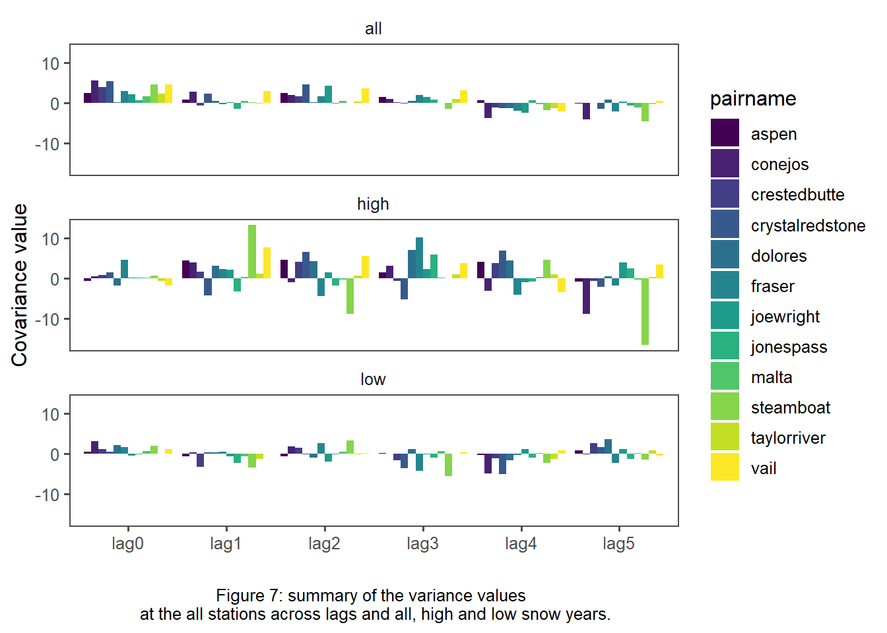

Chapter 5 Results
Load packages
library(tidyverse)
library(tidyr)
library(httr)
library(jsonlite)
library(plotly)
library(lubridate)
library(dataRetrieval)
library(sf)
library(mapview)
library(readr)
library(dplyr)
library(purrr)
library(fuzzyjoin)
library(furrr)
library("snotelr")
library(readxl)
library(stats)
library(tmap)
library(tigris)
library(elevatr)
library(raster)
library(ggplot2)The correlation between the MY and WY is low at the Fraser station pair with R = 0.30. This was consistent across all the basins. This is expected because the WY baseflow values can occur during two different calendar years when calculating baseflow using FDC (Figure 3). MY baseflow values occur during one calendar year because melt begins the year.
The correlation between the MY average baseflow and peak SWE is positive when the values are from the same year (Figure 4). This trend also occurs with a lag of 3 years (Figure 5). The correlation across the basins becomes less consistent with lag 4 and lag 5 (Figure 5). After splitting the times series into low and high snow years, the correlation changed. The high snow years tended to show a high correlation across most lags (Figure 5). However, the low snow years had much more variability across the lags (Figure 5).
big_join <- read_csv(file = 'data/readyforcorrel.csv', col_names = TRUE)
fraser <- big_join %>%
filter(pairname == "fraser")
fraser <- read_csv(file = 'data/fraser.csv', col_names = TRUE)
ggplot(fraser, aes(x = max_swe, y = q_mmd))+
geom_point()+
ggthemes::theme_few()+
labs(x = "Peak SWE (mm)", y = "Average Baseflow (mm/d)")+
geom_smooth(method=lm, se = FALSE)+
labs(caption = "Figure 4: correlation between peak SWE\n and average MY baseflow from the same year at the Fraser stations." )+
theme(plot.caption = element_text(hjust = 0.5))high <- read_csv(file = 'data/high.csv', col_names = TRUE)
low <- read_csv(file = 'data/low.csv', col_names = TRUE)
all <- read_csv(file = 'data/all.csv', col_names = TRUE)
datas <- bind_rows(all %>% mutate(data = 'all'),
high %>% mutate(data = 'high')) %>%
bind_rows(low %>% mutate(data = 'low')) %>%
pivot_longer(., lag0:lag5 )
ggplot(datas, aes(x = name, y=value, fill = pairname )) +
geom_bar(stat = 'identity',
position = 'dodge') +
ggthemes::theme_few() +
scale_fill_viridis_d() +
facet_wrap(~data, ncol = 1)+
labs(caption = "Figure 5: correlations between peak SWE and average \n MY baseflow across and all, high, and low snow years for all stations with lags 0-5.", y = "R value", x = "")frasercorrel <- datas %>%
filter(pairname == 'fraser')
ggplot(frasercorrel, aes(x = name, y=value, fill = data )) +
geom_bar(stat = 'identity',
position = 'dodge') +
ggthemes::theme_few() +
scale_fill_viridis_d()+
labs(caption = "Figure 6: summary of the correlation values \n at the Fraser stations across lags and all, high and low snow years.", x = "", y = "R value")+
theme(plot.caption = element_text(hjust = 0.5))The covariance analysis showed similar results with greatly consistency amongst stations for all and high snow years, and greater positive trends in lags 0-3. Again, the low snow years were inconsistent, more negative, and generally lower (Figure 7).
highcov <- read_csv(file = 'data/highcov.csv', col_names = TRUE)
lowcov <- read_csv(file = 'data/lowcov.csv', col_names = TRUE)
allcov <- read_csv(file = 'data/allcov.csv', col_names = TRUE)
datacov <- bind_rows(allcov %>% mutate(data = 'all'),
highcov %>% mutate(data = 'high')) %>%
bind_rows(lowcov %>% mutate(data = 'low')) %>%
pivot_longer(., lag0:lag5 )
ggplot(datacov, aes(x = name, y=value, fill = pairname )) +
geom_bar(stat = 'identity',
position = 'dodge') +
ggthemes::theme_few() +
scale_fill_viridis_d() +
facet_wrap(~data, ncol = 1)+
labs(caption = "Figure 7: summary of the variance values \n at the all stations across lags and all, high and low snow years.", y = "Covariance value", x = "")+
theme(plot.caption = element_text(hjust = 0.5))
The results of the multivariate regressions were inconclusive. The correlation coefficients and p-values were not significant across most basins.
The standard deviation of baseflow and peak SWE were relatively similar across stations. The COV were similar for baseflow and peak SWE at most stations with obvious outliers being the Steamboat and Vail station pairs (Table 2).
Table 2: Coefficients of variation (COV) for baseflow and peak SWE at each of the station pairs in order of northernmost latitude.
Basins that were in similar spatial locations tended to have similar correlation and covariance values when correlating all years and high snow years. The low snow years varied enough that there did not appear to be any basin characteristic in common.